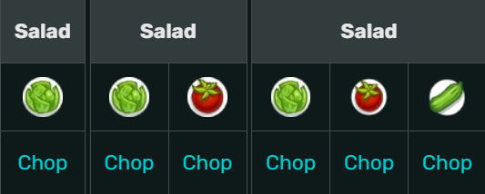

Salada
INGREDIENTES
- Alface – 1 unidade
- Tomate – 1 unidade
- Pepino – 1 unidade
- Azeite – 2 colheres (sopa)
- Sal – a gosto
- Pimenta – a gosto
INGREDIENTES

Cortada na tábua antes de servir.
Também precisa ser cortado.
Cortado para complementar a salada.